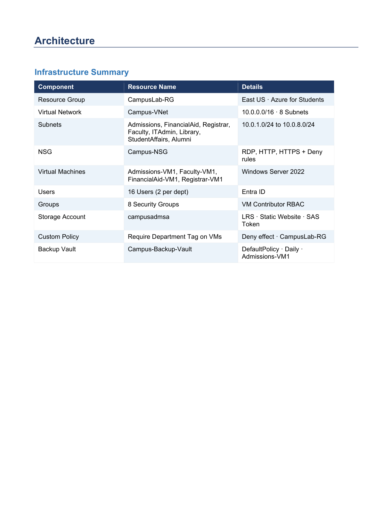

Enterprise Cloud Infrastructure Deployment on Microsoft Azure
Smart University Campus Infrastructure
Designed and deployed a mission-critical Azure landing zone for a smart campus environment, bringing together secure networking, identity, storage, backup, and policy governance into a single enterprise-ready foundation.
All visuals are sourced directly from the Azure campus project PDF documentation.
Azure Portal — CampusLab-RG
Virtual network segmentation
RBAC + Entra ID access
Secure backup automation
About the project
Enterprise-grade campus cloud infrastructure that feels like a Microsoft Azure product launch.
Mission
The project delivered a resilient and secure Azure-based foundation for a smart university campus, enabling controlled access, trusted application hosting, and business continuity across faculty, administration, and student operations.
Scope
- Virtual network and subnet segmentation
- Azure virtual machines for workload hosting
- Identity and RBAC with Microsoft Entra ID
- Blob storage, policies, backup, and monitoring
Technologies used
Azure-native services tuned for security, scalability, and operational clarity.
VNet
Azure Virtual Network
Segmented the environment into secure zones to isolate critical workloads and services.
VM
Azure Virtual Machines
Provisioned compute resources for campus workloads and internal systems.
Entra
Microsoft Entra ID
Implemented centralized identity and secure access governance for users and admins.
Blob
Azure Blob Storage
Hosted static content and documents with secure, scalable object storage.
Policy
Azure Policy
Enforced governance standards and configuration baselines across resources.
Bastion
Azure Bastion
Enabled protected remote access without exposing management ports publicly.
Vault
Recovery Services Vault
Established backup protection and restore readiness for critical workloads.
NSG
Network Security Group
Controlled inbound and outbound traffic with layered security rules.
RBAC
Role Based Access Control
Scoped permissions to least privilege principle across the environment.
Architecture
Secure Azure topology built to scale from a single campus to a multi-site enterprise footprint.
Created by Siddharth Shaurya

Core components
Azure Virtual Network forms the backbone with segmented subnets, a bastion host for secure administration, and NSGs to regulate communication pathways.
Security posture
Microsoft Entra ID and RBAC govern access, while Azure Policy and a Recovery Services Vault align the environment with governance and resilience requirements.
Infrastructure overview
Every layer of the deployment was orchestrated for performance, security, and maintainability.
Enterprise Infrastructure
Provisioned a modern Azure foundation that could support internal applications, secure administration, and high-availability services.
8 Subnets
Separated app, data, management, and connectivity workloads for better isolation and easier troubleshooting.
Multiple VMs
Hosted diverse workloads on dedicated virtual machines while following least-privilege and access-control best practices.
RBAC & Entra ID
Restricted access by role and privilege to support safe operations across departments and stakeholder groups.
Blob Storage
Provided secure storage for static web assets, backups, and internal documents.
Azure Policy & Recovery Vault
Ensured environment compliance and business continuity through policy enforcement and backup protection.
Static Website
Published a lightweight public presence for the campus infrastructure using Azure static web hosting.
Secure Networking
Used NSGs, bastion access, and network segmentation to reduce attack surface and strengthen resilience.
Live demonstration
Premium browser-style walkthroughs for each stage of the deployment lifecycle.
Campus deployment walkthrough
Shows the Azure portal experience, resource group organization, and infrastructure provisioning flow.
Security and access review
Highlights RBAC, Entra ID, NSG rules, and security-centric access control decisions.
Static web hosting demo
Demonstrates the published web presence, storage configuration, and website delivery flow.
Screenshot gallery
A premium gallery that turns the deployment story into a visual case study.
Implementation timeline
From resource group creation to deployment completion, each milestone was deliberate and measurable.
Resource Group
Virtual Network
Subnets
NSGs
Virtual Machines
RBAC
Storage
Policies
Backup
Testing
Deployment Complete
Challenges and outcomes
Complexity was handled with layered design, automation, and strong governance.
Challenge
Designing a secure yet scalable Azure foundation for a multi-user campus environment with multiple workloads and governance constraints.
Solution
Segmented subnets, enforced NSGs, centralized identity with Entra ID, and used Azure Policy to standardize deployments.
Outcome
Delivered a resilient infrastructure that is easier to manage, audit, and extend.
Challenge
Creating reliable access workflows without opening the environment to unnecessary exposure.
Solution
Used Azure Bastion, RBAC, and private-path design patterns for administration and sensitive operations.
Outcome
Raised the security bar while keeping the deployment approachable for operational teams.
Learning outcomes
The project sharpened both platform depth and real-world cloud engineering judgment.
Azure Networking
Cloud Security
Infrastructure as a Service
Identity Management
Backup & Recovery
Storage Design
Monitoring
Governance
Documentation
Professional case-study documentation ready for recruiters and hiring panels.
The full project report is available for review and includes deployment context, architecture rationale, and operational considerations.
Contact
Open to cloud, platform, and infrastructure engineering opportunities.
Let’s build secure, modern cloud experiences that stand out in both product and engineering contexts.
Get in touch